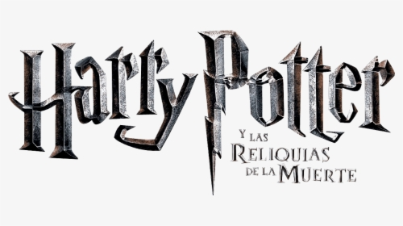

"Harry Potter" de J.K.Rowling

Povestea începe cu o sărbătoare ce are loc în lumea vrăjitorească. De mai mulți ani această lume a fost terorizată de un vrăjitor malefic și însetat de putere, Voldemort. Cu o noapte înainte, pe 31 octombrie 1981, el descoperă refugiul secret în care se ascundea familia Potter, omorându-i pe Lily și James Potter. Totuși, când a încercat să-l omoare pe fiul lor, Harry Potter, vraja fatală Avada Kedavra pe care a produs-o s-a întors asupra lui. Corpul lui Voldemort a fost distrus, dar spiritul său supraviețuiește, el fiind nici mort, nici viu. Singurul semn al vrăjii lui Lord Voldemort este o cicatrice în forma de fulger pe fruntea lui Harry. Fiind singurul supraviețuitor al blestemului fatal, Harry este numit de către comunitatea vrăjitorească „băiatul care a supraviețuit”(eng. original "The Boy Who Lived").
Pe 1 noiembrie, Rubeus Hagrid, un 'semi-uriaș', îl duce pe Harry la singurele lui rude în viață, familia Dursley, alcătuită din unchiul Vernon, un bărbat înalt, mătăhălos, aproape fără gât, dar cu o mustață foarte bogată, mătușa Petunia, o femeie slabă cu un gât lung, care îl detesta pe Harry, și Dudley, fiul lor obez și răsfățat. Ei au încercat în van să stârpească abilitățile lui magice, să-i ascundă proveniența lui din lumea vrăjitorească și să-l pedepsească aspru după fiecare întâmplare mai ciudată.
Totuși, odată cu apropierea zilei în care împlinește 11 ani (31 iulie 1991), Harry are primul lui contact cu lumea magică, atunci când primește scrisori de la Hogwarts, Școala de Magie și Vrăjitorie, livrate de bufnițe. Deși unchiul lui le interceptează, de ziua lui, Hagrid, Păstrătorul Cheilor de la Hogwarts, apare în casa Dursley și îi spune că este un vrăjitor și că este așteptat la Școala de Magie și Vrăjitorie. Fiecare volum prezintă un an din viața lui Harry, la Hogwarts, școala pentru vrăjitori și vrăjitoare. Acolo el învață să folosească formule magice și să producă poțiuni. Între timp, Lord Voldemort, revine la viață pentru a doua oară și preia controlul asupra comunității vrăjitorești, iar Harry se va confrunta în fiecare volum cu el până la înfruntarea finală.